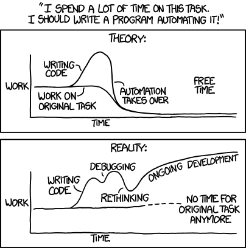

Disclaimer: Don’t take this too seriously … this is “thinking-in-progress” :)
It just struck me the other minute, how simplicity is the key theme behind two very important areas in software development, that I’ve been dabbling with quite a bit recently: Testing, and automation.
Have you thought about how testing, in its essence, is: Wrapping complex code, which you can’t mentally comprehend completely, in simple code, that you can mentally comprehend, at least one test at a time. Because, after all, if you can’t easily comprehend your test code, as to make sure it is correct, by simply looking at it, you will have to create even simpler tests that test your tests!
In a similar way, we need to make automation code simple - again, wrapping our complex code, in simpler code - for it to give us any gains. Otherwise, we will fall into this common problem:

Image Credit: xkcd
That is, if the motivation behind automation is to make things easier and less time consuming, it has to be simpler, not under the hood, but in the interface towards you as developer and maintainer.